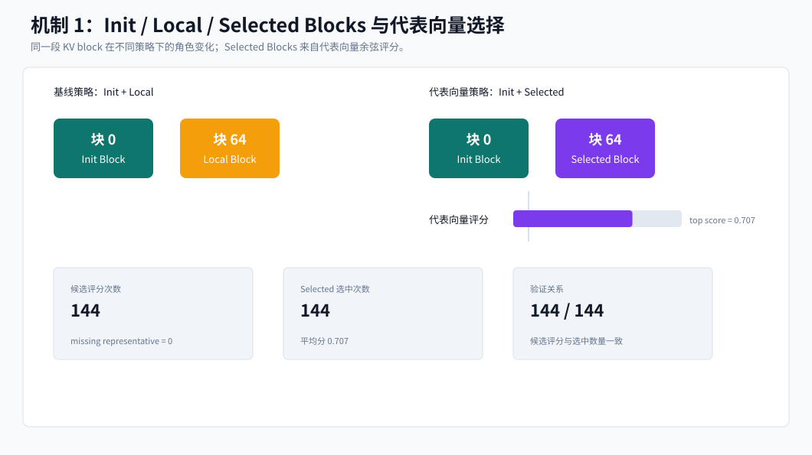
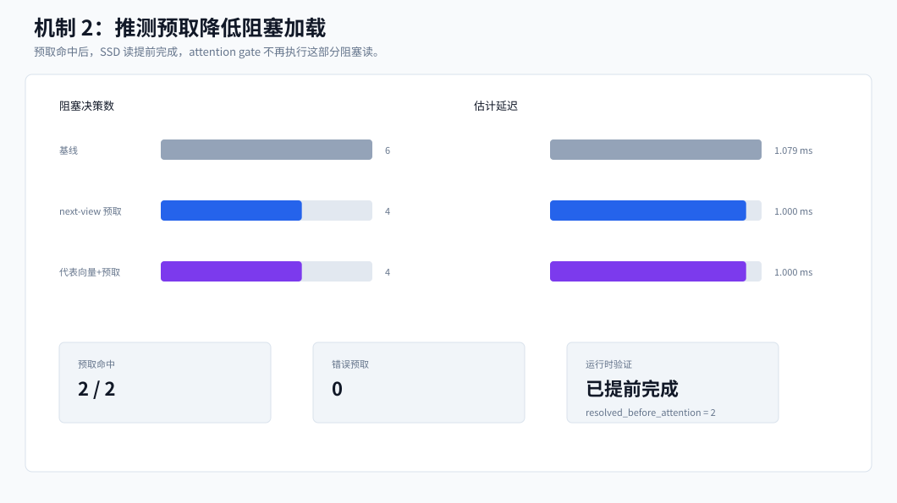
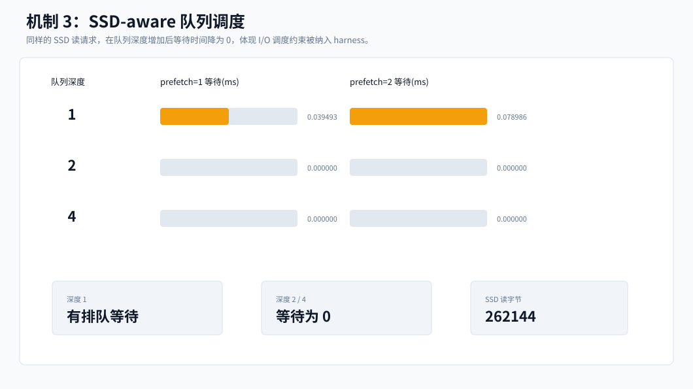
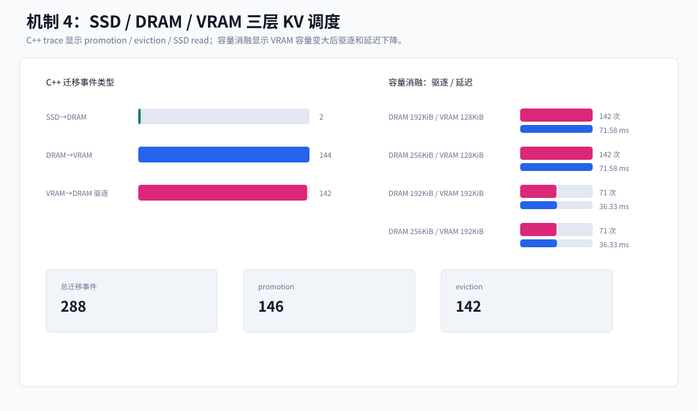

SolidAttention 机制复现证据图
这些图不是进度看板，而是由 harness 输出的实验数据直接生成，用于说明论文核心机制已经被复现到可测量状态。
Init / Local / Selected Blocks 与代表向量选择

推测预取命中与阻塞降低

SSD-aware 队列调度

SSD / DRAM / VRAM 三层 KV 调度

这些图不是进度看板，而是由 harness 输出的实验数据直接生成，用于说明论文核心机制已经被复现到可测量状态。



